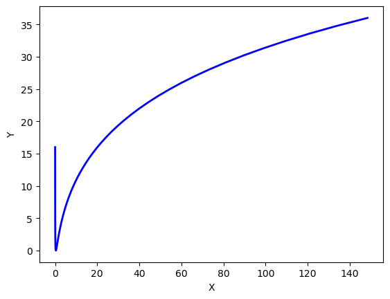
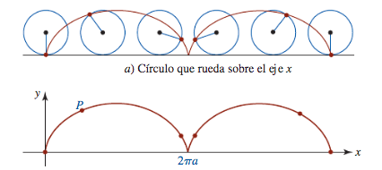
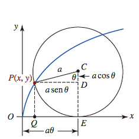
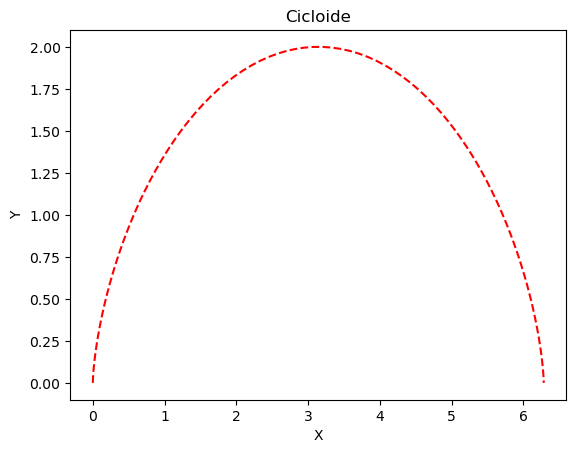
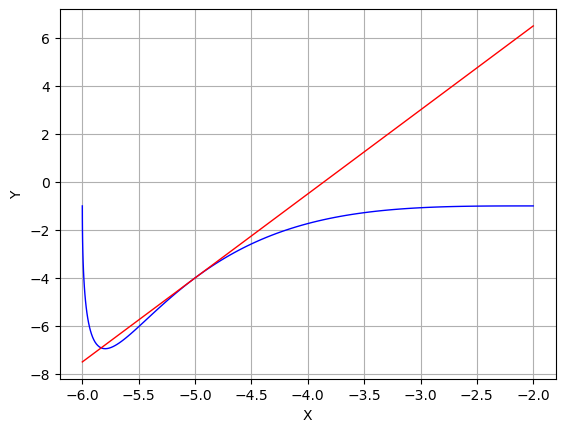

Si x y y están expresadas como funciones \[x = f(t),\qquad y = g(t)\]
en un intervalo I de valores \(t\), entonces, el conjunto de puntos \((x, y) = (f(t), g(t))\) definido por estas ecuaciones es una curva paramétrica.
Las ecuaciones son ecuaciones paramétricas de la curva.
Ejemplo
Grafique la curva definida por las ecuaciones param'etricas \[x(t)=t^2,\qquad y(t)=t+1 \hspace{6mm} -\infty < t < \infty\]
Solución
\(t\) esta definida para todos los números reales . La curva trazada por $(x,y) $ está definida en el plano cartesiano donde las funciones componentes estan definidas por \[x(t)=t^2, \ \ \ y(t)=t+1\]
La tabla de valores para esta curva se define como:
t
x
y
-3
9
-2
-2
4
-1
-1
1
0
0
0
1
1
1
2
2
4
3
3
9
4
#En primer lugar, importamos las libreríasimport numpy as npimport matplotlib.pyplot as plt#Para ver la gráfica en esta misma ventana%matplotlib inline#t = [-3, -2, -1, 0, 1, 2, 3]t = np.linspace(-5, 5, 11)x=[]y=[]for i in t: x.append(i**2) y.append(i+1)print('t:',t)print('x:', x)print ('y:', y)#Dibujamos las curvas para cada valor de x, con el color c y anchura lwplt.plot(x, y, c='r', lw =2)plt.xlabel("X")plt.ylabel("Y")plt.show()
La gráfica de cualquier función \(y = f(x)\) se obtiene siempre mediante una parametrización natural \(x = t\) y \(y = f(t)\). El dominio del parámetro es, en este caso, el mismo que el dominio de la función \(f\)
Ejemplo
La parametrización de la gráfica de la función \(f(x) = x^2\) está dada por
\[x = t,\ \ \ y = f(t) = t^2, \hspace{6mm} -\infty < t < \infty\]
Cuando \(t\ge 0\), esta parametrización da como resultado una trayectoria en el primer cuadrante del plano xy. Sin embargo, como el parámetro \(t\) también puede ser negativo, debemos además graficar la porción izquierda de la parábola; es decir, tenemos la curva parabólica completa. Para esta parametrización, no hay un punto inicial ni un punto final.
t = np.linspace(-5,5, 11)x=[]y=[]for i in t: x.append(i) y.append(i**2)print('t:',t)print('x:', x)print ('y:', y)#Dibujamos las curvas para cada valor de x, con el color c y anchura lwplt.plot(x, y, c='b', lw =2)plt.xlabel("X")plt.ylabel("Y")plt.show()
import numpy as npt = np.linspace(-5, 5, 100)x=[]y=[]for i in t: x.append(np.exp(i)) y.append(i**2+2*i+1)#print('t:',t)#print('x:', x)#print('y:', y)#Dibujamos las curvas para cada valor de x, con el color c y anchura lwplt.plot(x, y, c='b', lw =2)plt.xlabel("X")plt.ylabel("Y")plt.show()

Cicloides
Es la curvatura descrita por un punto fijo de una circunferencia que rueda, sin resbalar, a lo largo de una recta fija.
Ejemplo
Una rueda de radio \(a\) se mueve a lo largo de una recta horizontal. Obtenga las ecuaciones paramétricas de la trayectoria que recorre un punto \(P\) localizado en la circunferencia de la rueda. La trayectoria se llama cicloide.
Solución
Tomamos el eje \(x\) como la recta horizontal, marcamos un punto \(P\) en la rueda, empezamos a mover esta última con \(P\) en el origen y la hacemos girar hacia la derecha.

EccPar3_1.png
Como parámetro, utilizamos el ángulo \(\theta\) en el que gira la rueda, medido en radianes.

EccPar3.png
El centro de la rueda \(C\) se encuentra en \((a\theta, a)\)
ahora, \(|OE|=arco\ PE=a\theta\)
\(x=|OQ|=|OE|-|QE|=a\theta - a\sin(\theta)=a(\theta-\sin(\theta))\) y
t = np.linspace(0, 2*np.pi, 100)a =1#Radio de la ruedax = a*(t-np.sin(t))y = a*(1-np.cos(t))fig = plt.figure()#Dibujamos las curvas para cada valor de x, con el color c y anchura lwplt.plot(x, y, '--r')plt.title("Cicloide")plt.xlabel("X")plt.ylabel("Y")plt.show()

Rectas tangentes
Al igual que con las gráficas de funciones \(y=f(x)\), se puede obtener información acerca de una curva C definida paramétricamente al examinar la derivada \(dy/dx\)
Sean \(x=f(t)\) y \(y=g(t)\) las ecuaciones paramétricas de una curva suave C. La pendiente de la recta tangente en un punto \(P(x,y)\) sobre C está dada por \(dy/dx\). Para calcular la derivada, se usa la siguiente forma
\[\begin{equation}
\dfrac{dy}{dx}=\lim\limits_{\Delta t \to 0}\dfrac{\Delta y}{\Delta x}=\dfrac{\lim\limits_{\Delta t \to 0}\dfrac{\Delta y}{\Delta t}}{\lim\limits_{\Delta t \to 0}\dfrac{\Delta x}{\Delta t}}=\dfrac{dy/dt}{dx/dt}
\end{equation}\]
Teorema
Si \(x=f(t)\) y \(y=g(t)\) son las ecuaciones param'etricas de una curva suave C.entonces la pendiente de la recta tangente en un punto \(P(x,y)\) sobre C es
luego \[\dfrac{dy}{dx}=\dfrac{dy/dt}{dx/dt}=\dfrac{5t^4-12t^2}{2t-4}\]
de tal modo, en \(t=1\), se tiene \[\dfrac{dy}{dx}\bigg|_{t=1}=\dfrac{-7}{-2}=\dfrac{7}{2}\]
Ahora, sustituyendo \(t=1\) en las ecuaciones paramétricas encontramos que el punto de tangencia es (-5,-4). Por tanto la ecuación de la recta tangente en este punto es
t = np.linspace(0, 2, 120)x = t**2-4*t-2y = t**5-4*t**3-1Y1 =7/2*x+27/2#print(x), print(y)fig = plt.figure()#Dibujamos las curvas para cada valor de x, con el color c y anchura lwplt.plot(x, y, c='b', lw =1)plt.plot(x, Y1, c='r', lw =1)plt.plot(-5, -4, c='r', lw =1)plt.title("")plt.xlabel("X")plt.ylabel("Y")plt.grid()plt.show()

Ejemplo
Obtenga la tangente a la curva \(x = \sec t,\ \ y = \tan t, \ \ -\frac{\pi}{2}<t<\frac{\pi}{2}\) en el punto \((\sqrt{2}, 1)\), donde $ t =/4$
Solución
La pendiente de la curva es
\[\dfrac{dy}{dx}=\dfrac{dy/dt}{dx/dt}=\dfrac{\sec^2 t}{\sec t \tan t}=\dfrac{\sec t}{\tan t}\]
Si una curva C está definida en forma paramétrica por \(x = f(t)\) y \(y = g(t)\), \(a\le t\le b\), donde \(f′\) y \(g′\) son continuas y no simultáneamente iguales a cero en \([a, b]\), y C se recorre sólo una vez conforme t aumenta de \(t = a\) a \(t = b\), entonces, la longitud de C es la integral definida
\[L=\int_a^b\sqrt{[f'(t)]^2+[g'(t)]^2}dt\]
Si \(x = f(t)\) y \(y = g(t)\), y utilizamos la notación de Leibnitz, obtenemos el siguiente resultado para la longitud del arco:
En virtud de la simetr'ia de la curva en relaci'on con los ejes de coordenadas, su longitud es cuatro veces la longitud de la parte en el primer cuadrante. Tenemos
\[x=\cos^3 t, \hspace{8mm} y=\sin^3 t\]
\[\begin{align*}
\left(\dfrac{dx}{dt}\right)^2&=[3\cos^2 t(-\sin t)]^2=9\cos^4 t \sin^2 t\\
\left(\dfrac{dy}{dt}\right)^2&=[3\sin^2 t(\cos t)]^2=9\sin^4 t \cos^2 t\\
\sqrt{\left(\dfrac{dx}{dt}\right)^2 + \left(\dfrac{dy}{dt}\right)^2}&= \sqrt{9\sin^2 t \cos^2 t(\cos^2 t +\sin^2 t)}\\
&= \sqrt{9\sin^2 t \cos^2t}\\
&= 3|\cos t \sin t|\\
&= 3\cos t \sin t
\end{align*}\]
Por lo tanto, la longitud de la parte en el primer cuadrante
\[\begin{align*}
L&=\int_0^{\pi/2} 3\cos t \sin t dt\\
&= \dfrac{3}{2}\int_0^{\pi/2}\sin 2t dt\\
&=-\dfrac{3}{4}\cos 2t\bigg|_0^{\pi/2}=\dfrac{3}{2}
\end{align*}\]
La longitud de la astroide es cuatro veces esto, es decir \(4(3/2)=6\)
Ejercicio
Determine el área \(A\) debajo de un arco de una cicloide y la longitud de arco \(L\) de este arco